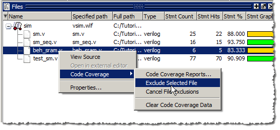

Questa SIM allows you to exclude
lines and files from code coverage statistics. You can set exclusions
with GUI menu selections, with a text file called an “exclusion
filter file”, with “pragmas” in your source code, or with the coverage
exclude command. Pragmas are statements that instruct Questa SIM to ignore coverage statistics
for the bracketed code.
Refer to Coverage Exclusions in the User’s
Manual for more details on exclusion filter files and pragmas.
Procedure
- Exclude
a line in the Statement Analysis view of the Code Coverage Analysis
window.
- Change
the Analysis Type to Statement in the Code Coverage Analysis window.
- Right
click a line in the Statement Analysis view and select Exclude Selection from
the popup menu. (You can also exclude the selection for the current
instance only by selecting Exclude Selection For Instance <inst_name>.)
- Cancel
the exclusion of the excluded statement.
- Right-click
the line you excluded in the previous step and select Cancel Selected Exclusions.
- Exclude
an entire file.
- In the
Files window, locate the beh_sram.v file
(or the beh_sram.vhd file
if you are using the VHDL example).
- Right-click
the file name and select (Figure 1).
Figure 1. Excluding a File Using
GUI Menus
- You
can cancel all file exclusions by right-clicking anywhere in the
Files window and selecting from
the popup menu.